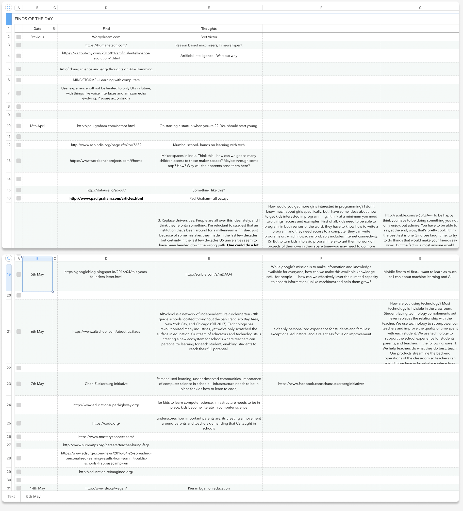
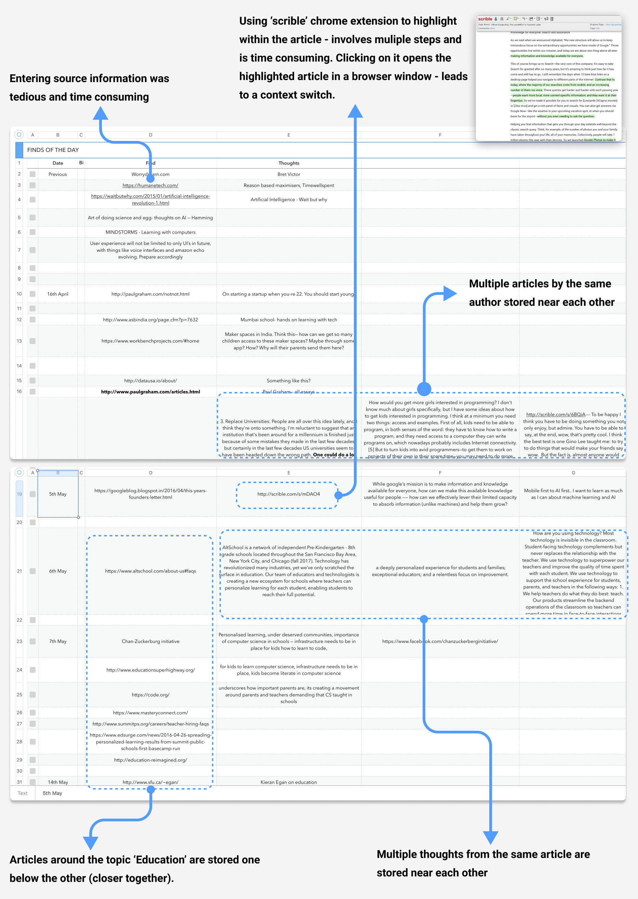

Timeline: September 2019 - Present
THE BEGINNINGS
How it started
In early 2016, I started reading a lot of articles online - articles about design, technology, startups, life, learning, and so on. Every now and then I stumbled upon an article that really clicked with me. Since our short term memory can hold new information for a limited time, I didn’t want to lose what had clicked with me, and in what way.
I did a simple thing - I created a ‘Numbers’ document and started updating it regularly. One column contained the date, another the URL, another column a sentence or two from the article that clicked with me, and my thoughts in a separate column.
What I liked about this approach
- I could visually see my knowledge grow over time. Over time, this spreadsheet grew, and served as my gold mine - it was my personal knowledge repository, and going through it each time just gave me SO much perspective!
- I really liked the chronological arrangement. I could see how each day counts and the Return On Investment on the extra effort I was putting in was apparent.
- Search - oh yes, this repository was searchable
- I had been using other tools like pocket and browser bookmarks for storing information here and there, but I didn't find myself referring back to those links often. Part of the reason was that these tools stored only the title and the link. When referring back, I liked reading 'why I had stored the article', read the highlights, and rarely read the full article again.
However, over time, I realized there were a few limitations with this method:
- My spreadsheet approach was limited to capturing data (URL's) while I was working on my laptop. I wanted to also capture the information I came across in a book, or while reading on my phone, or kindle, or for that matter, even a billboard that captured my attention while I was on a bus.
- Entering source information was tedious and time consuming - copying the URL, pasting it in the spreadsheet, entering a date. Moreover, while referring back, I was interested in skimming through my thoughts, and go to the source, if needed.
- Often, I liked multiple articles written by the same author or even multiple paragraphs from the same article or a book. For example, Paul Graham's essays. I wanted to store them near each other, so I started expanding this spreadsheet horizontally. I had to find that row and then add this new article to a new cell. This meant a single cell had both the URL and the text - this caused the structure of the spreadsheet to become a bit off.
- I also found myself reading many articles around a certain topic - for example, I was interested in learning about the education domain at that time - so I stored those links near each other. Since it was a loosely held spreadsheet, I did not have any particular organisation. Sometimes I stored similar links one below the other, sometimes in the same row. I wanted a better way to organise information around a certain topic.
- I wanted to store/highlight the sentences that I liked in the article. To do this, I used a chrome extension called ‘scrible’ to highlight those sentence. Scrible provided a link to a copy of the article with my highlights which I pasted into this spreadsheet - this meant using multiple tools and the process was not straightforward or simple. When I wanted to refer back to the original source, I had to click the link in the spreadsheet that opened it in the browser. My highlights and my thoughts on those highlights weren’t stored together.
- Capturing source information and context while reading a book on a kindle was tedious - I had to manually enter the book name and the chapter name/number. There were some limitations like -
- I couldn’t preserve the spatial context of the information, which helps in retention and recall.
- Additionally, I couldn’t highlight the exact part of the information that I found interesting.
After a few weeks, I started wondering, how can we simplify this process to increase my productivity? There were a few ideas I had, but never got around to delving deep into this.
I took this project up as part of my Interaction design class in Fall 2019 where we had to do a semester long individual project. I saw the class as a perfect opportunity to work on something I cared about.
Please stay tuned for more information about this project. There are lots of interesting things in store, I promise!